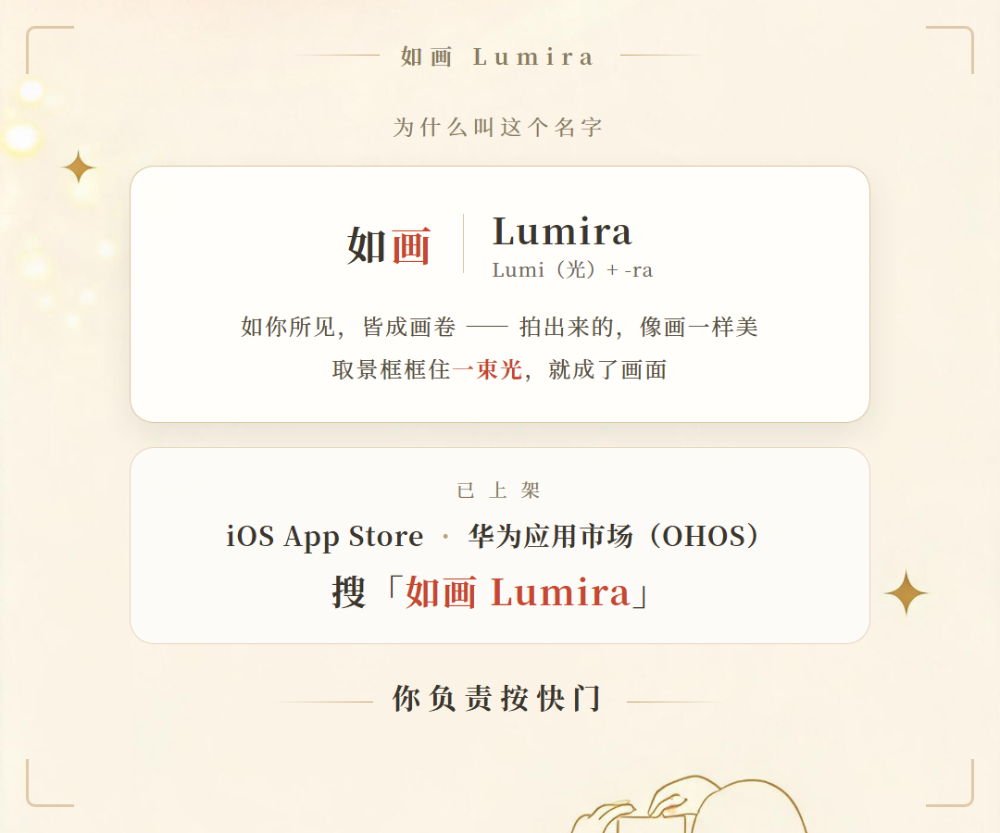

不知道从什么时候开始，手机相册成了"拍了但再没看过"的地方。
我们总以为，是自己不够上镜、不会拍、没有审美。
但也许，只是少了一句提示。
我们做了「如画 Lumira」。它解决的是一个小而真实的痛点——拍照时，不知道"该站成什么样"。
打开一款模板，一条人形剪影会轻轻叠在取景框上：手放哪、脚怎么站、人在画面里的位置，都替你想好了。你照着它站，照着它摆，就好了。
不需要懂"三分法"，不需要背"站姿三十式"。像练字有字帖，学舞有镜子，拍照这件事，终于也有了一份可以临摹的温柔范本。

▲ 取景框里的半透明剪影 · 效果示意
▷ 60+ 款模板，总有一款适合今天的你
人像、探店、美食、街拍、夜景——内置 60+ 款精品模板，线上持续上新。想找也简单，关键词一搜——"日落""咖啡店""银杏"——你想拍的那种感觉，多半已经有人替你想好了。

▲ 搜索页 · 效果示意
▷ 把平凡的日子，拍成一本漂亮的日记
探到好看的店、看到好看的风景，随手记成一条探店足迹，配上那张刚拍的照片。时间久了回头看——你喝过的咖啡、走过的街角、突然放晴的天空，都被你认真拍下来过。
从几百张里挑出真正能打的，收进精选集，凑够了拼成一张九宫格海报。相册不再只进不出，它开始有了值得被反复翻看的那几页。

▲ 探店足迹 · 我的精选集 · 效果示意
▷ 拍完的那一下，就该直接发出去
好照片是忍不住想分享的。模板可以一键生成分享卡片发给对象、闺蜜——朋友轻轻一点，就能拍同款。你的照片不只是照片，也是一份温柔的心意。

▲ 模板分享卡片 · 效果示意
▷ 它的样子，也该由你决定
如画内置四种 UI 风格：新拟态、扁平、玻璃、女性美学，搭配八款主题色。你可以把它调成奶油白的温柔样子，也可以换成冷静克制的样子——App 的审美，应该匹配用它的人。
▷ 关于隐私，我们想认真说一句
如画支持离线使用，不强制登录注册，你的照片和本地数据由你自己掌控。拍照是很私人的事，我们希望这个工具安静、可靠、不越界。
「如画 Lumira」已上架：
iOS App Store：搜索「如画」或「Lumira」，或点击文末"阅读原文"【商店链接待补】
华为应用市场（OHOS）：同步上架，搜索「如画 Lumira」【商店链接待补】
愿你相册里的每一张，都不再是"拍了但没看过"。
愿我们都能把平凡生活，拍成如画的模样。

▲ 名字由来 · 上架信息
今天天气如何？如果让你现在拍一张"此刻"，你想拍什么？